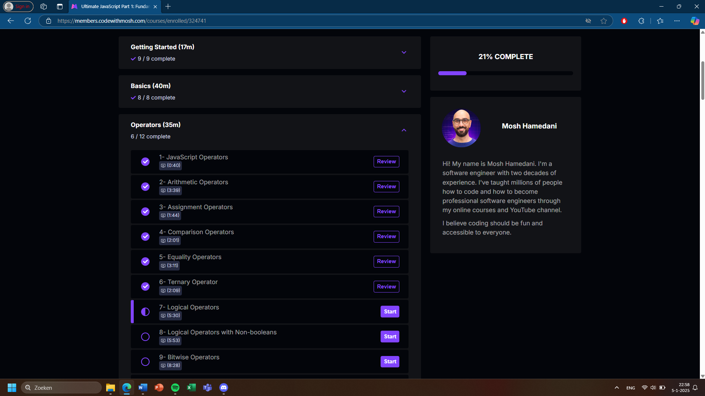
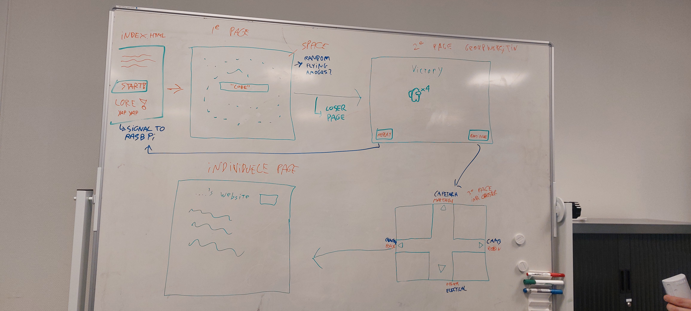
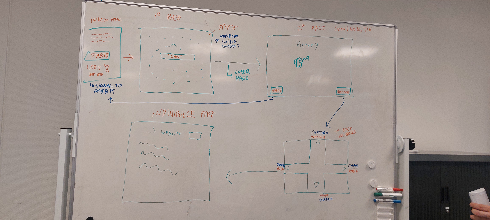

Ik ben in de vakantie een klein beetje bezig geweest met het leren van Javascript in mijn eigen tijd. Ik ben aan een online cursus begonnen en ben nu door 21% van het eerste onderdeel heen zoals te zien is in de afbeelding hieronder. Ik heb hiervan al 2 complete onderdelen afgerond en ben nu aan de derde begonnen, maar vanwege het feit dat ik merkte dat ik ook even rust nodig had na de periodes van hard werken, heb ik niet zo veel gedaan als dat ik gehoopt had.
Ik heb aan de rest van de groep laten weten dat ik dit als een leerdoel heb aangenomen. Zij helpen mij nu ook zeer erg met het niet doordraven in mijn ideeën. Dit was zeker te merken bij de vergadering die we hadden voor de vakantie. Hier hebben we namelijk een intermissie gehouden van bijna 45 minuten waarin we aan het brainstormen waren over wat we nou exact wouden met de uitwerking van de website. Hierin hebben we veel knopen doorgehakt en een lijst samengesteld waar we ideeën op hebben gezet die we kunnen uitvoeren als we er tijd voor hebben. Deze lijst heb ik momenteel alleen niet direct bij de hand.
Ik heb hier tijdens de laatste les van de vakantie een gesprek over gehad met mijn SLB-er, Marlon, die mij heeft gezegd dat je altijd vragen kan stellen in de online balie. Ook gaf hij mij de raad om de rest van mijn groep op de hoogte te houden van mijn voortgang. Hierdoor kunnen zij mij helpen als het nodig is en dan kunnen ze mij ook vragen hoe het gaat als ze het idee hebben dat ik vastloop terwijl ik het zelf niet aangeef.
We nog niet zo ver als dat ik gedacht had. Ik had gehoopt dat wij als groep wat meer hadden gedaan aan het project, maar iedereen van ons had even tijd en rust nodig na de drukke weken. We hebben nog veel werk te doen en zijn van plan om aankomende week het harde werk weer op te pakken. Ik voorzie ook geen problemen met het behalen van tussentijdse doelen of het behalen van deadlines.
Er zijn bij de laatste vergadering redelijk veel knopen doorgehakt en ideeën op tafel gelegd die we nu van plan zijn om uit te voeren. Dit gaat vooral over de opmaak en werking van de website. Specifiek zijn we van plan om uit het spel Among Us verschillende locaties te screen shotten en die te gebruiken op de website. Hierdoor kan je echt het gevoel van een succesvolle Amogus (zo heten de karakters die je bent als je het spel speelt) krijgen als je uit de escaperoom gekomen bent.
Zoals ik al aangaf bij leerdoel 1 houd de groep mij erop vast dat ik niet te graag optimistische dingen wil gaan doen. Hierdoor blijft de realisatie van het project en de ideeën mogelijk. Ik zal mijn best doen om een lijst te maken van de werkelijke ideeën en die te verwerken in mijn volgende blog.
Heel kort houden. De groep werkt goed samen. We zijn het snel eens over dingen, en als we dat een keer niet zijn wegen we alle voor en nadelen tegen elkaar af om zo een juiste beslissing te nemen samen. Het beste voorbeeld is de brainstormsessie van de vrijdag voor de vakantie. Hier hebben we een whiteboard gebruikt om uit te tekenen wat we nou precies met de website wouden doen. Dit zijn we toen aan het aanpassen geweest totdat we het allemaal eens waren met de uitkomst.
 